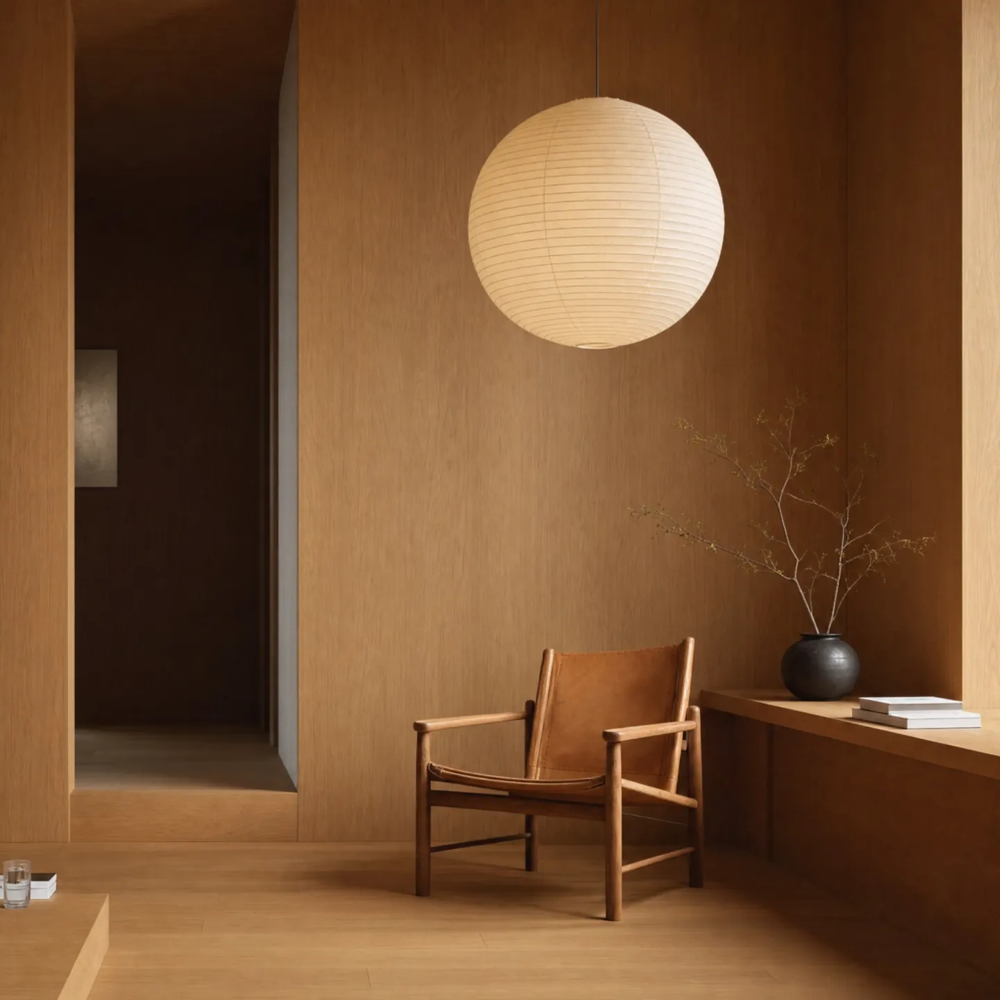

Golang 后端
高并发服务、gRPC / HTTP API 与领域驱动设计，让复杂业务拥有清晰、可靠的实现。
MOERSITY / ENGINEERING & LIFE
我是 Moersity，一名后端工程师。用 Go 构建高性能服务，探索云原生与 AI 基础设施，也在代码之外，寻找生活的开阔与自由。

阅读技术日报I. NOTES & PERSPECTIVES / 技术记录
浏览所有日报 ↗持续记录 AI 推理系统、Golang、Rust 与 Kubernetes 的演进。关注性能、可用性与工程实践，把每天的技术变化，沉淀为构建系统时更扎实的判断。
订阅 RSS ↗II. AREAS OF FOCUS / 技术栈
高并发服务、gRPC / HTTP API 与领域驱动设计，让复杂业务拥有清晰、可靠的实现。
从服务拆分到分布式追踪，关注服务之间的协作，也关注系统整体的可观测性。
容器编排、GitOps 与基础设施即代码，让服务的交付和运行更稳定、更可控。
探索模型服务、推理引擎、向量数据库与 AI 工作流，让智能能力走向可靠的生产环境。
III. BEYOND CODE
A PERSONAL NOTE
好的系统和好的人生一样，
都需要耐心、热情，
和持续的重构。
— 写在某个深夜 debug 之后
IV. START A CONVERSATION
技术交流、开源协作，或只是打个招呼。
lixiang0417.cq@gmail.com